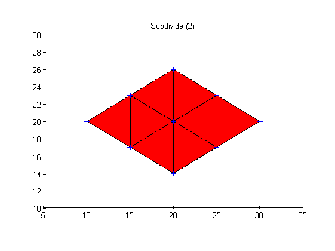
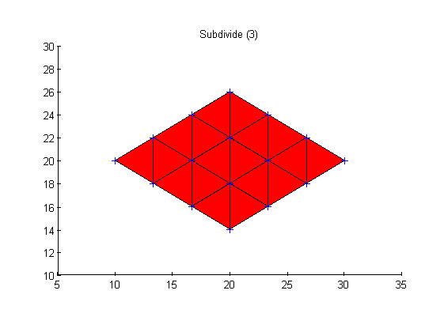

Contents
Initialisations
vertices = [20 26;10 20;20 14;30 20];
faces = [1 2 3;1 3 4];
figure(1); clf;
drawMesh(vertices, faces, 'FaceAlpha', .3);
hold on; axis equal;
axis([5 35 10 30]);
drawPoint(vertices);
title('Original mesh');

Subdivide into 2 faces
n = 2;
figure(2); clf;
drawMesh(vertices, faces, 'FaceAlpha', .3);
hold on; axis equal;
axis([5 35 10 30]);
[v2 f2] = subdivideMesh(vertices, faces, n);
drawMesh(v2, f2, 'lineWidth', 1);
drawPoint(v2, '+');
title('Subdivide (2)');

Subdivide into 3 faces
n = 3;
figure(3); clf;
drawMesh(vertices, faces, 'FaceAlpha', .3);
hold on; axis equal;
axis([5 35 10 30]);
[v2 f2] = subdivideMesh(vertices, faces, n);
drawMesh(v2, f2, 'lineWidth', 1);
drawPoint(v2, '+');
title('Subdivide (3)');

Subdivide into 4 faces
n = 4;
figure(4); clf;
drawMesh(vertices, faces, 'FaceAlpha', .3);
hold on; axis equal;
axis([5 35 10 30]);
[v2 f2] = subdivideMesh(vertices, faces, n);
drawMesh(v2, f2, 'lineWidth', 1);
drawPoint(v2, '+');
title('Subdivide (4)');